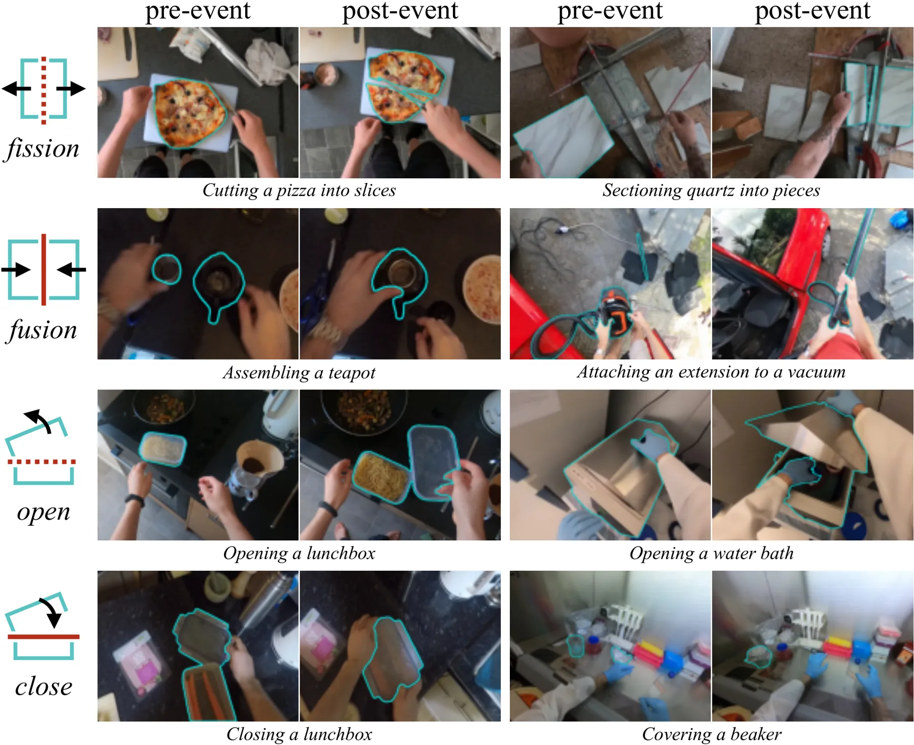
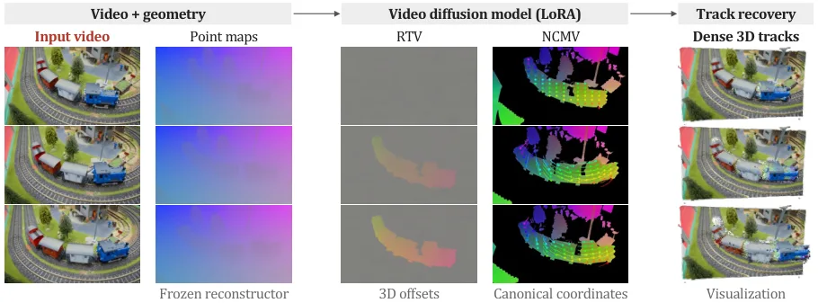
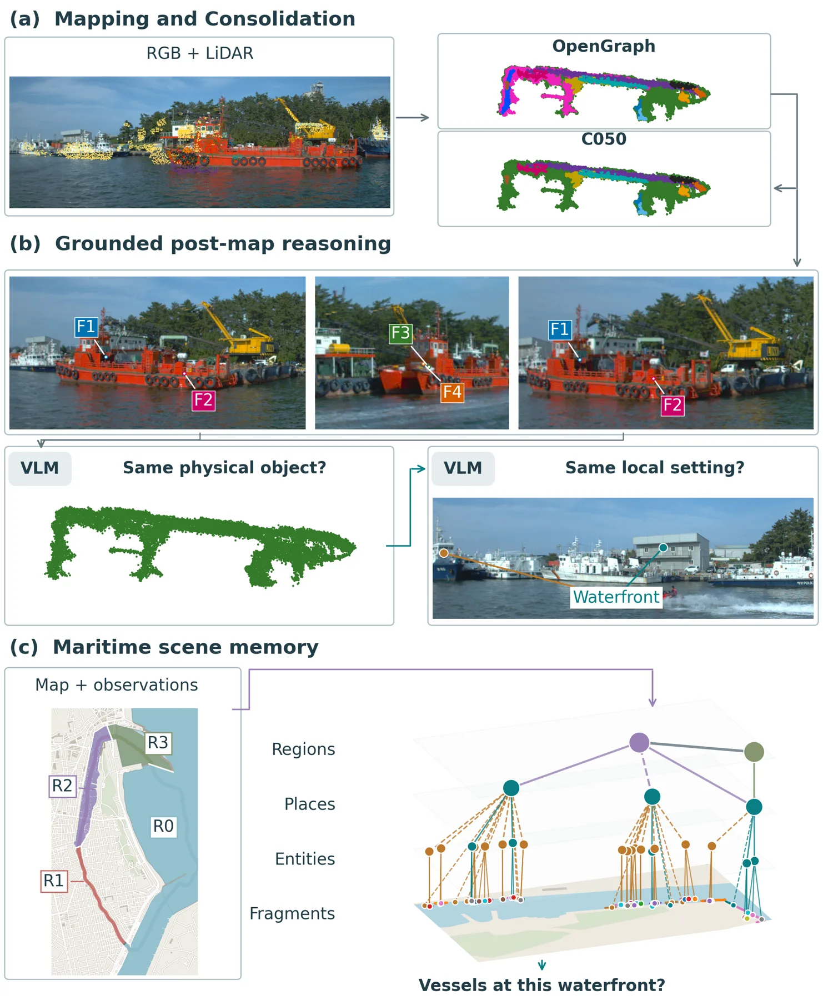
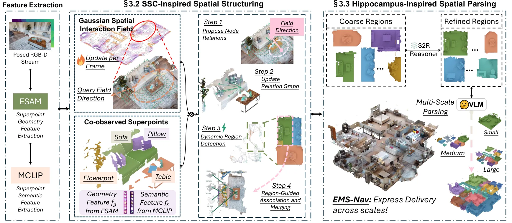
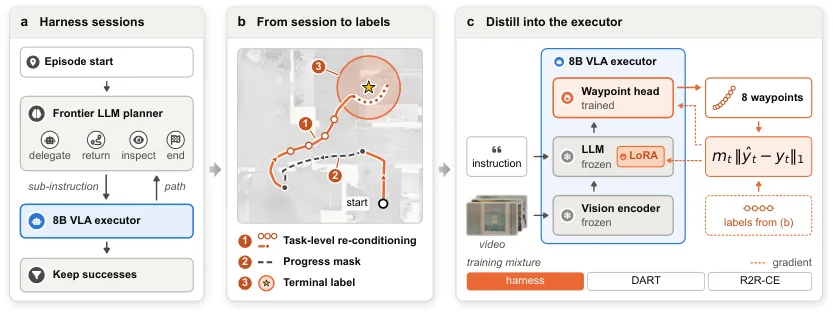

新论文 · 日期 2026-11-12 · score 17 · S层 · Geometry Foundation Models / 3D Foundation Models · cs.CV
内容级别：完整单篇海报
作者：Sheng Tang, Shengzhe Wei, Tiancheng Chen, Wenhua Jin
评分 17/10
几何基础模型位姿优化3DGS/4DGSSpatialBench数据闭环运行时对比
一句话工作总结：这篇是“几何基础模型 + 位姿优化引擎 + 合成/重建数据闭环”的完整系统论文：GFM 提供相机、深度、匹配与动态点四类先验，PoseEngine 用 STAR 组织跨视图约束把先验接成场景级相机，KosmoWorld 用真实重建生成训练监督。它最有信息量的地方不是单点模型更强，而是把“先验越强、后端越简”的工程主张做成了可测的运行时对比（14.07 h vs 69.67 h…
Kosmo-GFM 是一个场景重建系统，把几何基础模型（GFM）、位姿优化引擎（PoseEngine）和来自 KosmoWorld 的重建监督三部分串起来。GFM 从图像或视频预测相机参数、深度、跨视图对应和动态 3D 点；PoseEngine 用这些先验加几何优化恢复场景级相机位姿与几何，再支撑 3DGS / 4DGS 表示；KosmoWorld 则用真实场景重建生成图像与几何监督，反过来提升 GFM 的几何预测…
We present Kosmo-GFM, a scene reconstruction system that integrates a geometry foundation model (GFM), a pose optimization engine (PoseEngine), and reconstruction-derived supervision from KosmoWorld. GFM predi…

新论文 · 日期 2026-11-12 · score 17 · S层 · 3D/4D Spatial Perception · cs.CV
内容级别：完整单篇海报
作者：Joel Julin, Liuyue Xie, Ananya Bal, Mose Sakashita
评分 17/10
4D 高斯泼溅去干扰形变场雅可比动态重建烟雾去除评测协议
一句话工作总结：这篇的贡献不是又一个去干扰网络，而是把“该被删掉的东西”定义成一个可计算的量：形变场对输入（位置、时间）的雅可比协方差迹。分数高的高斯被正则项推给逐视图 distractor 层，或在训练后按分位剪掉。它在动态+干扰场景上 PSNR 与 DeformableGS 互有胜负，但在“干扰是否被保留”这件事上优势极大（Jeep 上人类标注 0% 的帧还能看到遮挡物），代价是训练时间…
从随意拍摄的视频做动态重建，既要保留被摄主体的真实运动，又要压掉瞬态遮挡物、阴影和体积效果。现有方法要么假设场景静态而牺牲真实运动，要么把所有观测一起建模，产生鬼影和不稳定几何。ReCan-GS 用形变场导出的雅可比形变敏感度作为重建歧义的经验代理，据此把场景拆成动态 Core 高斯与逐视图 Distractor 高斯，或对敏感 Core 高斯做后处理剪枝。同一判据可去空间遮挡物、光度伪影以及演化中的烟雾，不需要掩…
Dynamic reconstruction from casual video must preserve valid subject motion while suppressing transient occluders, shadows, and volumetric effects. Existing methods either suppress valid motion through static-…

新论文 · 日期 2026-11-12 · score 17 · S层 · 3D/4D Spatial Perception · cs.CV
内容级别：完整单篇海报
作者：Leonardo Vanni, Stefano Gasperini, Federico Tombari, Chiara Plizzari
评分 17/10
4D 高斯泼溅第一人称视频拓扑变化部件级运动事件门控新基准
一句话工作总结：这篇把“拓扑变化”从视觉伪影提升为一个可评测的问题，并给出方法：事件树 + 运动分叉（每个末端部件一条 SE(3) 轨迹）+ 时空聚类场（空间 logits 与事件门控偏置做软路由）+ 拓扑边界重建（按接触面凸包补新高斯、按事件时刻设激活/停用窗）。基准 TopoEgo 有 24 段、4,618 帧、36 个物体、34 个事件。事件后帧上比最强基线高 4.47 dB，这个数字…
从单目第一人称视频重建动态场景与物体，对具身智能很关键，但现有 4DGS 方法在切、装配、开、关这类带拓扑变化的日常交互上会崩：它们靠形变固定表示，一旦物体分裂、合并或表面被揭开，就会出现严重伪影。作者提出 TopoEgo——第一个专门覆盖拓扑变化（fission、fusion、open、close）的第一人称视频基准，以及 Topo-4DGS：把独立刚体变换分配给各交互部件，并随时间激活/停用高斯，以表示出现、消…
Reconstructing dynamic scenes and objects from monocular egocentric video is crucial for embodied AI, yet existing 4D Gaussian Splatting (4DGS) approaches struggle with everyday interactions involving topologi…

新论文 · 日期 2026-11-12 · score 11 · S层 · Geometry Foundation Models / 3D Foundation Models · cs.RO
内容级别：完整单篇海报
作者：Zhuo Han, Yeqiang Wang, Xinran Wang, Hongwei Han
评分 11/10
VLA空间记忆几何基础模型VGGT-Ω操作策略真实机器人
一句话工作总结：这篇的技术选择很克制：冻结 1B 的 VGGT-Ω，只训一个把 patch 特征压成 256 个空间 token 的压缩器，把空间 token 与视觉 token 拼在一起存进有界记忆，检索时用“余弦相似度 × 归一化差”的乘积做注意力偏置。它在四个仿真基准上都小胜，真实任务上因为涉及几何精度与步骤记忆，提升幅度大得多（叠积木 41.7%→100%）。消融也诚实：去掉记忆或去…
机器人操作同时需要空间场景理解与任务历史，但很多 VLA 策略主要依赖当前观测，没有显式整合空间结构与任务历史。基于外观的记忆对遮挡和视角变化敏感，而只看当前场景的空间表示又记不住场景在任务执行中如何变化。STVLA 把预训练视觉几何基础模型的特征与视觉表示一起写进时序记忆，使策略能把过去场景结构当作当前决策的上下文；并用一个有数学依据的打分规则（相关性 + 非冗余）挑选有用历史。在 LIBERO、LIBERO-M…
Robotic manipulation often requires both spatial scene understanding and task history. However, many vision-language-action (VLA) policies rely primarily on current observations, without explicitly integrating…

新论文 · 日期 2026-11-11 · score 10 · S层 · Geometry Foundation Models / 3D Foundation Models · cs.CV
内容级别：完整单篇海报
作者：Yushi Lan, Zeren Jiang, Kelvin Li, Xingang Pan
评分 10/10
稠密 3D 跟踪视频扩散模型LoRA点图条件Wan零样本评测
一句话工作总结：这篇的价值是把“用生成模型做 3D 跟踪”从一句口号变成一次可复现的表示对比：RTV 精度更高，NCMV 更自然但需要 2D 跟踪器补救。作者还给了不经过输出 VAE 的回归读出（Track4D-Reg），可用稀疏监督，且在 Dynamic Replica 动态点上做到最好。最有说服力的诊断是“几何 vs 运动”的替换实验：把输入点图换成真值后 EPE 从 0.413 掉到…
本文研究如何把在数百万视频上预训练的视频扩散模型（VDM）复用于稠密 3D 点跟踪——这一任务训练数据稀缺。难点在于要把 3D 轨迹表示成“像视频”的信号，而这类信号往往落在自然视频分布之外。作者系统比较了两种表示：Residual 3D Tracking Video（RTV）把每个像素编码成相对查询帧的 3D 偏移，可直接从生成的视频读出轨迹；Normalized Coordinate Map Video（NCM…
We study how to repurpose video diffusion models (VDMs), pretrained on millions of videos, for dense 3D point tracking, where training data is scarce. Doing so is non-trivial, as it requires representing 3D tr…

新论文 · 日期 2026-11-10 · score 14 · A层 · Embodied Navigation / VLN / Spatial Reasoning · cs.CV, cs.RO
内容级别：半海报
作者：Kim Alexander Christensen, Dina Zimmermann, Martin Steinert, Eleni Kelasidi
评分 14/10
3D 场景图开放词表海上场景持久记忆VLM 推理跨域迁移
一句话工作总结：这是一篇“迁移诊断 + 保守适配”的论文：先证明开放词表 3DSG 的语义能迁移（112/139 物体有几何支撑、其中 99.1% 类别正确），再证明身份与高层组织不能直接迁移（每艘船平均 2.3 个节点）。适配只做后处理：几何-语义保守合并把节点/船从 2.306 降到 1.861，加多视图 VLM 再降到 1.222；宏观区域与参考分区 ARI 0.965、IoU 0.8…
3D 场景图（3DSG）能给机器人提供持久的米制语义表示用于空间推理，但现有方法主要面向室内与陆地环境。本文考察一个代表性的室外开放词表方法迁移到海事环境时的表现，以及需要哪些适配。实验发现：零样本的室外 3DSG 描述在多数有几何支撑的物体上与标注一致，但地图出现明显的物理实体碎片化，其陆地式高层假设也无法表达海事空间组织需求。作者保留底层建图方法、对其累积证据做后处理：先用米制语义合并，再用几何锚定的多视图 V…
Three-dimensional scene graphs (3DSGs) can provide robots with persistent metric-semantic representations for spatial reasoning, but the existing methods have primarily been developed for indoor and terrestria…

新论文 · 日期 2026-11-11 · score 12 · A层 · Embodied Navigation / VLN / Spatial Reasoning · cs.RO, cs.AI, cs.CV
内容级别：半海报
作者：Zenghui Yang, Xinan Wang, Danyang Li, Zhe Xu
评分 12/10
多尺度导航功能区域开放词表建图端上部署HM3D空间层级
一句话工作总结：这篇的论点是“区域既是理解的单位，也是计算的单位”：在线建图用粗区域约束实例关联与合并，定期解析把区域细分成功能空间并用 S2R 学习合并，再由 VLM 命名并组合成层级，最后按指令在不同尺度上选证据。它在 HM3D 的 36 个场景、18,628 条指令上把 SR@1 做到 44.51%（最强基线 DualMap 约 35.1%），逐帧建图时间 199 ms（4k 帧）比…
工业巡检机器人需要到达工作区域和具体设备，目标跨越从区域到物体的多个空间尺度，因此必须把每个目标与周围环境关联起来。现有方法靠丰富的环境表示支持多尺度导航，但计算与存储代价大，限制了无线覆盖不完整、只能靠船载/机载计算持续导航的部署场景。EMS-Nav 是一个面向在线、端上运行的仿生多尺度导航框架：核心是以区域为基本单位组织感知、空间理解与导航，把物体及其关系分组成有功能意义的空间，并从局部区域构建到更大环境的层级…
Industrial inspection robots must reach work areas and specific equipment. These destinations span spatial scales from regions to objects, so robots must relate each target to its surroundings to interpret the…

新论文 · 日期 2026-11-12 · score 9 · A层 · Embodied Navigation / VLN / Spatial Reasoning · cs.RO, cs.LG
内容级别：半海报
作者：Jinze Tao, Yuxiao Han, Kangkang Dong, Yancong Wei
评分 9/10
VLA导航经验蒸馏LoRAREVERIE-CE停止行为
一句话工作总结：这篇的洞见是“状态是规划器给的，动作不必”：把智能体走过的状态保留、把运动目标换成“会话实际怎么走”，再掩掉绕路段、补齐停止标签，就能让 VLA 单独复现智能体的能力。数字上 SR 35.0→44.9（+9.9，95% 区间 3.9–16.3），而只用测地专家数据做适配是 0 增益；对打智能体本身（53% SR、423 s、70k token），蒸馏后的 VLA 是 57%…
导航智能体通常用一个 LLM 规划器去调用 VLA 模型，每个 episode 都要跑 LLM，带来成本与延迟。本文不蒸馏规划器，而是把成功的智能体经验蒸馏进 VLA，使 VLA 在测试时能单独导航。智能体会话并不是 VLA 演示：它们包含由规划器工具与子指令驱动的运动，以及绕路。作者提出 H2E，一种任务级经验蒸馏方法，把这些会话转换成 VLA 训练数据：每个运动都成为原始任务指令下的一个 VLA 动作，并以实际…
Navigation agents use a large language model (LLM) planner to call a vision-language-action (VLA) model. Each episode needs the LLM, adding cost and delay. We distill successful agent experience into the VLA i…